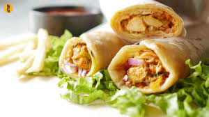

Delicious flaky flat bread, covered with egg on one side and filled with a simple salad of onion and cucumber. Little amount of chaat masala is added for flavor and sometimes, a pinch of Indian black salt also goes in. A tiny dollop of ketchup and its wrapped casually.
Let us know about its ingredients :
For the Wrap
- 300 g maida (flour)
- Salt (As your taste)
- 14 g sugar
- 16 g dalda (shortening)
- 180–200 g warm water
For the fillings
- 4 eggs
- 150 g onions
- 4 pcs green chillies
- 1 large lime
- 1–2 tsp chaat-masala
- 1–2 tsp rock-salt
- 80 g tomato ketchup
- 1 pc cucumber (optional)
- ~ 75 g vegetable oil
- Any vegetables of your choice